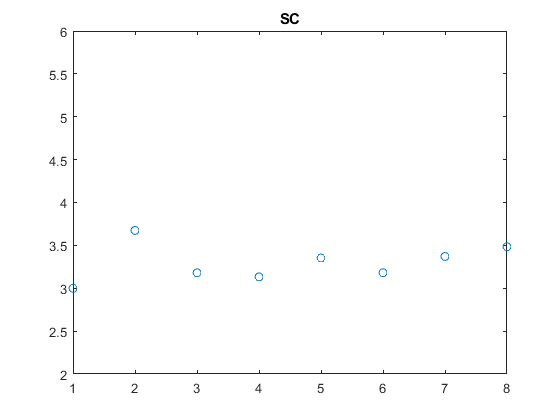
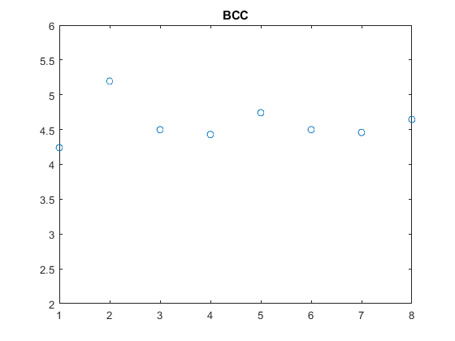
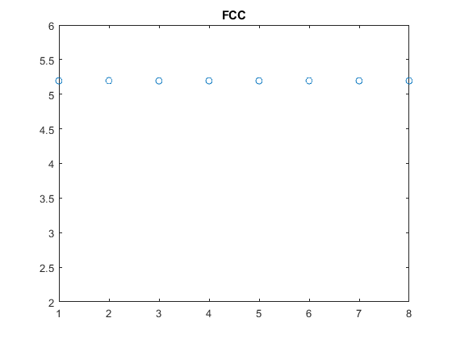

Contents
lambda = 1.54;
anglesdeg = [19.48,22.64,33.0,39.68,41.83,50.35,57.05,59.42];
sinusangles = sind(anglesdeg);
hklSC = sqrt([1,2,3,4,5,6,8,9]);
hklBCC = sqrt([2,4,6,8,10,12,14,16]);
hklFCC = sqrt([3,4,8,11,12,16,19,20]);
Plottar sqrt(h^2+k^2+l^2)/sin(theta) för SC
figure(1)
SCratio = hklSC./sinusangles;
plot(1:8,SCratio,'o')
title('SC')
ylim([2 6])

Plottar sqrt(h^2+k^2+l^2)/sin(theta) för BCC
figure(2)
BCCratio = hklBCC./sinusangles;
plot(1:8, BCCratio,'o')
title('BCC')
ylim([2 6])

Plottar sqrt(h^2+k^2+l^2)/sin(theta) för FCC, detta är den sökta
figure(3)
FCCratio = hklFCC./sinusangles;
plot(1:8,FCCratio,'o')
title('FCC')
ylim([2 6])

Visar a
a = mean(lambda/2 * FCCratio);
disp(a)
3.9997